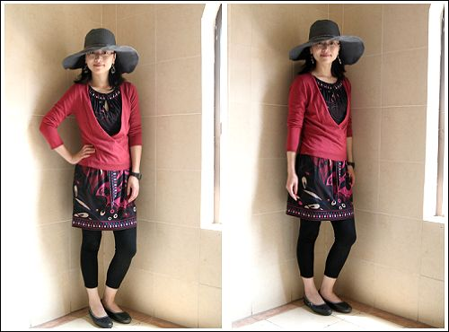

春季的下雨天 @ Apr 14, 2009
郊游完南京便下雨了，温度并没降，潮湿的空气中有着春天淡淡的暖意却仍然有着几分清凉。雨水洗刷了郁郁葱葱的植物、空气中的污浊以及建筑上的灰尘，好象点了眼药水令人眼前一亮。这时候街上的人总比平时要少，最爱这样的街道，也爱春季的下雨天。
这两天感到疲劳，从小腿肚子开始延伸到全身的拖沓。菜懒得摘，饭懒得吃，最好天天吃零食啃鸭掌吃水果喝咖啡....懒得写，懒得想，连八卦都看不懂了，完了完了，一次郊游就让我累成这样？春天来临前信誓旦旦要补回去年未完的旅行计划，这样怎么行呢？压根没走多少路呀？开车到琵琶湖，停好车下到湖边，坐在树荫下过了两三个小时而已。
中午的太阳有点烤人，不得不戴上帽子去遛狗。天气凉爽时狗狗肯定走在人前面，不时要停下来等一等主人，天一热人走得飞快，而它的步伐开始变得缓慢。

8 Responses to “春季的下雨天”
2009-04-14
这周我在南京西路上买了顶帽子，被店员一夸，干脆就戴着走了，哈哈！
2009-04-14
呵呵~那你肯定是最受欢迎的顾客~
2009-04-15
我也有一顶这样黑色的大檐帽^o^
2009-04-15
呵呵~~怎么感觉戴眼镜戴帽子有点怪~~~
2009-04-15
一样的， 外外根本就蹲在楼道里不愿扑向大好日光
2009-04-15
这顶帽子是浅色藏青蓝的，好难形容的颜色。
不戴眼镜就戴隐型，嫌麻烦，就中午遛狗那一会儿。
LUKE无论刮风下雨还是出太阳，只要外出就很有兴趣。
2009-04-17
摆脱，表把自己穿的一截一截的。。。
把打底裤脱了吧
2009-04-17
冷哎~夏天就不穿打底裤啦~
Leave A Reply
存档只读，评论已关闭。